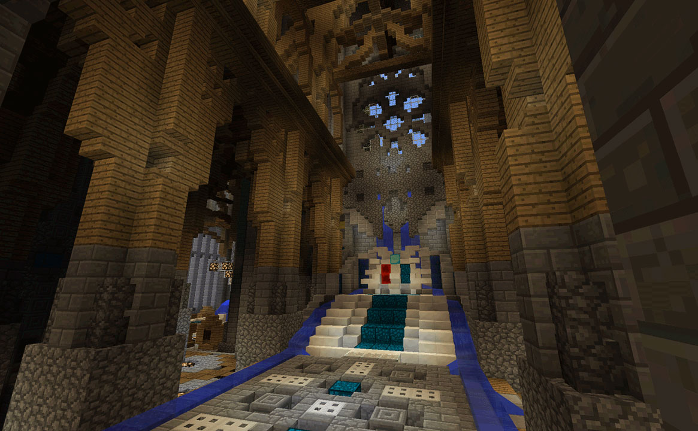
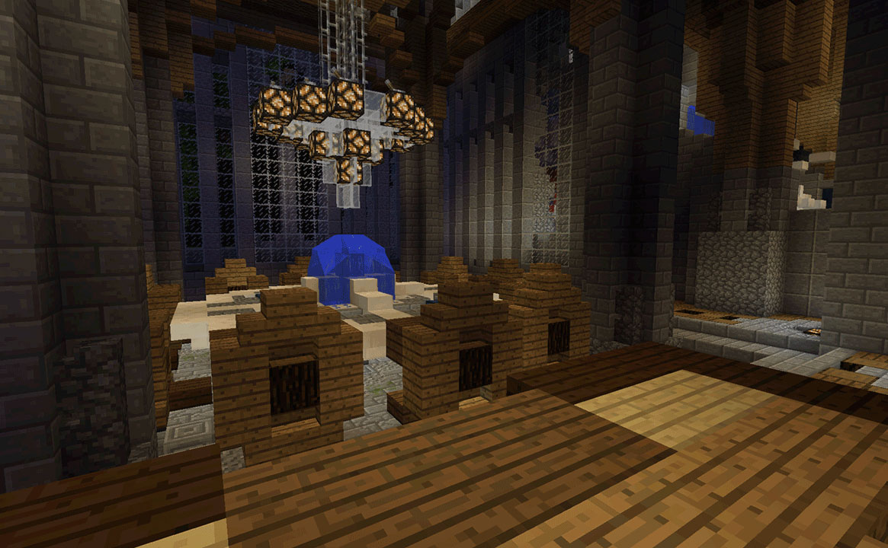
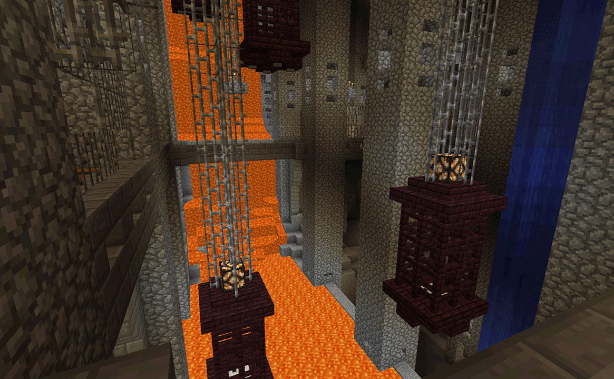

//
Why Minecraft?
“What kind of blockhead (heh) puts a Minecraft build in their portfolio?” Good question, dear reader, and I’m glad you asked. Minecraft is a game. Pop culture
defines games as toys for children instead of the vessels for creativity that they’ve become in the decades since their inception. Public opinion of games as a
medium for art is negative. But games have the power to teach creativity in ways that have never been possible. Minecraft doesn’t need to be for children. Sure,
a cobbled-together house takes little design dexterity. But constructing massive, complex builds take time, effort, and skills. Skills in aesthetic design.
Skills in planning. Skills in level creation. Skills in math. And skills in design in general. So yes, reader, this is a Minecraft build in a portfolio.
But it is a culmination of thousands of hours of learning and innovating and building my own knowledge. So I urge you to not immediately pass this off as irrelevant.
I’ve paid people as Minecraft designers during my 4 years as a megaserver owner. I assure you it is not easy. I believe it is an art form. A weird, blocky,
3D, user-explorable art form. And like any art form, it takes years of practice to become a master.
The Majesties Castle took up my entire winter break of the 2014-2015 school year. It is by far and away the most complex Minecraft build I have done to date.
I initially started this for a build contest. A server (The Lords of Minecraft) was running a build competition, and I decided to enter. The build took me
into the realms of visual design and symmetry. 200+ hours of work and a masterpiece was born.
//
The Castle
I had quite a challenge with the exterior. A size limitation was part of the contest, so I needed to make the exterior dimensions as large as possible while still maintaining
a non-sqaure shape. By scattering a few towers around and curving a few walls, I achieved a non-uniform looking castle that is still quite large. The detailing needed to look
visually interesting without becoming repetitive. That is a huge task for a castle of this scale. Detailing the outside of a building is never easy. I'm extremely pleased with
the end result.
This next image is the throne room. I threw around a LOT of different design ideas into this one, but decided on this one. The cathedral-styled arched wood ceilings mix nicely with
the marble throne. Lighting a room like this is especially tricky. Fill it with lights and it becomes overbearing. Everything from the window to the floor has patterned and thought-out
extra detail.

The Lord's Table. This was part of the challenge commission as well. The realm has a bunch of Lords, and a lot of the politics and roleplay between them is done at the table. It had to
be fancy and fit in with the theme. It has a very open connection to the throne room, and a high-arched ceiling.

One of many hallways in the castle. The floor patterning here took a long time to get right. Pay special attention to the subtle gothic support arches and the large windows.
The dungeons. A gargantuan hollowed out cavern below the castle. Towering cobblestone support pillars form the foundation of the large castle above. Hanging cells over
a river of lava, with countless worn down jail cells and iron bridges.

The massive dining hall overlooks the throne room. Members of the kingdom can eat at while watching the king and queen manage their kingdom. The long tables and huge arched
ceiling give this entire room a medieval and classic feel.

The library is a massive part of the castle, spanning 4 individual floors. This is a picture of the basement, but it is much more interesting in-person. Look at the full image tour or
simply download the minecraft world to see it for yourself.
Here are just two of the 10+ lord bedrooms in the castle. The roleplay server has Lords that reside over different districts, each with a unique theme. Each room is built to fit those
lord-specific themes. The full image tour shows the rest. A lot of thought and creativity went into each and every one of these. I had to build with an intensely limited resource pallete if I wanted
to stick to each lord's theme. It was certainly a challenging building restriction, and I had a lot of fun with it.
Almost all of the roof is covered with a stunning garden. None of the trees are normal minecraft trees, but rather, custom trees that look more natural. Winding pathways and rooftop pools
come together to not only make a tranquil spot for players to enjoy, but to also add a bit of green to the color pallete of the castle. This turned out immensely well. The green mixes
perfectly with the aqua roof colors.
Another requirement for the contest - A movie theater. No castle is complete without a movie theater, and this theater is quite unique. A lot of lighting design went into this one. The
lights needed to be dim enough to keep a theater feel, but bright enough for players to see inside. A massive projector can be turned on or off, dimming the lights when it happens.
The final build commission was an observatory as the castle capstone. I'm a big fan of astronomy, so I wanted to make this one fairly accurate. I modeled it after how real-life observatories
work. A rotating dome and telescope with a hatch to block rain. It is fantastic and one of my favorite parts of the castle.
Copyright © 2016 Daniel Timko